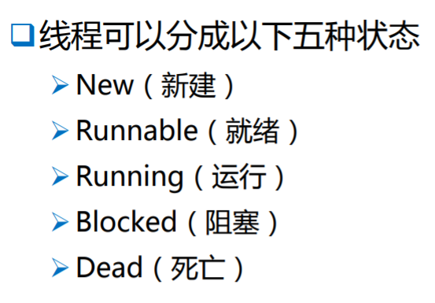

进程：
内存中 运行的一个应用程序。
(只要启动一个程序, 就会在内存中开辟一块空间, 用来存储应用程序的所属信息。分配了一块内存空间我们一般就叫启动了一个进程, 启动一个程序就是启动了一个进程。)
线程：
进程中的一个执行流程。
多线程：
一个进程中有 两个或两个以上这样的执行流程。
进程或线程在cpu执行时是轮询进行的, 比如同时聊qq和听音乐, 只不过每个进程或线程执行的时间非常短,是以毫秒为单位的, 所以用户的感受是在同时听音乐和聊天。
------------------------------------------------------------------------------------
线程的生命周期：


线程的各个状态对应的java语句。
1.新建：
new Thread();
新建一个线程
2.就绪：
start(); 只有start()方法才能让线程从新建状态转换为就绪态。
线程等待cpu的调用执行。所以调用start()也只是让该线程处于就绪态, 但不一定它就比后start()的线程会先执行, 毕竟还有优先级这一因素需要考虑。即使是同一优先级的两个线程, 先处于就绪态的线程有时候也不一定比后处于就绪态的线程先获得cpu执行。
注意: 同一个线程对象只能调用一次start()方法.从new到等待运行是单行道,所以如果你对一个已经启动的线程对象再调用一次start方法的话,会产生:IllegalThreadStateException异常
3.运行：
线程被cpu调用执行。
4.阻塞：
正在运行状态的线程, 因为某种原因暂停了cpu的调用执行。有三种情况:
1）
sleep(时间): 睡眠，等待。让某个线程睡眠一段时间
join([时间]): 让一个线程先执行。一般是一个线程调用了另一个线程的join方法, 所以导致了先去执行另外的线程了, 那么当前的线程就先被阻塞了。
2）
同步造成的阻塞, 同步就是等待某线程执行完自己才开始执行, 也就相当于排队。
3）
wait([时间]): 也是一种等待,和sleep()的区别是wait()可以不指定时间, 不指定时间就只能等待别的线程将当前线程唤醒。
5.死亡
正常结束。
异常结束。
---------------------------------------------------------------------------------------------------------------
JavaGuide面试突击版中关于线程的描述:
Java 线程在运⾏的⽣命周期中的指定时刻只可能处于下⾯ 6 种不同状态的其中⼀个状态（图源 《Java 并发编程艺术》4.1.4 节）。

Java 线程在运⾏的⽣命周期中的指定时刻只可能处于下⾯ 6 种不同状态的其中⼀个状态（图源 《Java 并发编程艺术》4.1.4 节）。

由上图可以看出： 线程创建之后它将处于 NEW（新建） 状态，调⽤ start() ⽅法后开始运⾏，线程这时候处于 READY（可运⾏） 状态。可运⾏状态的线程获得了 cpu 时间⽚（timeslice）后就处于 RUNNING（运⾏） 状态。
操作系统隐藏 Java 虚拟机（JVM）中的 READY 和 RUNNING 状态，它只能看到 RUNNABLE 状态（图源：HowToDoInJava：Java Thread Life Cycle and Thread States），所以 Java 系统⼀般将这两个状态统称为 RUNNABLE（运⾏中） 状态

当线程执⾏ wait() ⽅法之后，线程进⼊ WAITING（等待）状态。进⼊等待状态的线程需要依靠 其他线程的通知才能够返回到运⾏状态，⽽ TIME_WAITING(超时等待) 状态相当于在等待状态 的基础上增加了超时限制，⽐如通过 sleeplong millis ⽅法或 waitlong millis ⽅法可以将 Java 线程置于 TIMED WAITING 状态。当超时时间到达后 Java 线程将会返回到 RUNNABLE 状 态。当线程调⽤同步⽅法时，在没有获取到锁的情况下，线程将会进⼊到 BLOCKED（阻塞） 状态。线程在执⾏ Runnable 的 run() ⽅法之后将会进⼊到 TERMINATED（终⽌） 状态。
------------------------------------------------------------------------------------------------------------------------------
主线程：
主线程是应用程序启动后 最先 启动的线程。线程很多, 一定会先启动一个主线程。

Java应用程序 就是多线程的程序。比如说启动一个java应用程序, 那么主线程的代码功能任务, 就在主方法里。
随便写的一个java程序, 除了一定会启动主线程外, 还会启动垃圾回收线程,进行自动垃圾回收 ,不需要用户进行垃圾管理；
java还会垃圾回收。
子线程：

创建子线程的方法:
1.继承 Thread类
此时子线程的任务在run()方法里, 所以我们需要按照自己的需求重写run()方法。
也可以直接创建Thread类的对象, 然后调用Thread类的run()方法, 虽然可以这样调用 , 但是Thread类的run方法里没有任何东西, 所以这样调用没有任何意义, 我们创建子线程的目的就是为了调用我们自己实现的逻辑。所以需要自定义一个类继承Thread类并且重写run()方法。
2.实现Runnable接口
需要注意的是Runnable是一个函数式接口, 它的抽象方法是 public abstract void run();
实现了Runnable接口后, 在使用线程时还是要用Thread类来启动线程
创建子线程的好处是可以让多个线程并发的执行, 而如果所有功能的代码都放在一个主线程里而不创建子线程, 那么就只能所有代码按顺序执行。
子线程默认的命名方式是：
Thread - N
父线程创建出来的子线程中, 子线程的优先级和父线程是一样的, 并且和父线程属于同一个线程组。

上面示例的打印结果是 Thread[main,5,main]。第一个"main"是当前线程的名字, "5"是当前线程的优先级(java中的线程的优先级是1-10。1是优先级最小,10是最大。优先级越小说明该线程被cpu调用到的机会要更少一些), 第二个"main"是该线程所在的组。
创建并使用子线程实例一: (继承Thread类)

打印结果如下:

将上面使用的start()方法改为run()方法:

结果变为如下图: (可以发现执行run()方法里面的代码的线程变成了主线程,而不是主线程的子线程)。根本原因是调用run()方法根本没有启动子线程,调用run()方法是不会启动子线程的。这就是我们以前常用的main方法里调用了一个别的类里的方法而已, 就是简单的方法调用过程,整个过程由主方法完成。所以要启动子线程必须调用start()方法才行。
一个线程对象只能调用一次start方法.从new到等待运行是单行道,所以如果你对一个已经启动的线程对象再调用一次start方法的话,会产生:IllegalThreadStateException异常.
可以被重复调用的是run()方法。
Thread类中run()和start()方法的区别如下：
run()方法:在本线程内调用该Runnable对象的run()方法，可以重复多次调用；
start()方法:启动一个线程，调用该Runnable对象的run()方法，不能多次启动一个线程；
上图的打印输出结果如下:

从下面的start()方法可以看出来, 一个线程对象只能启动一次(也就是调用start()方法一次),并且线程的启动会调用底层的c/c++的代码,说明线程的运行是需要底层操作系统的支持的。

如果要更改线程的名字, 不使用默认的线程命名方式, 则需要使用带参的构造方法:

打印结果如下:

------------------------------------------------------------------------------------------------------------------
创建并使用子线程实例二: (实现Runnable接口) 这种方式用的更多一些, 有利于实现对象资源共享, 因为在使用静态成员的时候会遇到很多复杂的情况, 第一种无法实现对象资源共享。
需要注意的是Runnable是一个函数式接口, 它的抽象方法是 public abstract void run();
此时创建并启动一个线程的代码如下。可以发现, 实现了Runnable接口后, 在使用线程时还是要用Thread类来启动线程(子类继承Thread类来创建线程的方式是直接用子类来启动线程)。说明实现Runnable接口只是等价于重写了Thread类里的run方法(实际上Thread类里的run方法就是重写得Runnable接口的run方法, 因为Thread类本身就实现了Runnable接口), 所以说和继承Thread类是一样的,只是换了一种创建线程的方式。

打印结果如下:

如果上面的mian()函数里使用以下方式直接调用SubThread2中的run()方法(如下图), 则会和前面的SubThread1一样,不会启动子线程, 而是直接由主线程执行run()方法。这只是普通的方法调用, 并没有启动子线程:

上图的返回结果如下:

如果要更改线程的名字, 则和前面一样, 在创建Thread类的对象时, 带上指定的线程名:

打印的结果如下:

------------------------------------------------------------------------------------------------------------------
一次启动多个子线程:

打印输出结果如下。可以发现两个子线程是交替运行的, 互不干扰, 两个子线程都启动后, 接下来的执行顺序是未知的,每次执行下来打印的结果可能不一样。如果是一个线程执行, 那么必然是按代码顺序顺序执行的, 即先执行完t1的run()方法, 才会执行t2的run()方法。

---------------------------------------------------------------------------------------------------------------------------------------
创建子线程：
继承 Thread类 和 实现 Runnable接口区别：
1.继承Thread类：
继承了Thread类的所有功能，
而且继承后的类 本身就是 线程类,
不利于资源共享（资源是指访问同一个对象的资源）
2.实现 Runnable接口：
因为Runnable接口只有一个功能, 也就是接口中的 run()方法, 实现 Runnable接口就等价于重写了Thread类的run()方法
实现Runnable接口后的类 不是 线程类。
有利于资源共享（有利于共享同一个对象的资源, 比如上面的例子中t1、t2线程就是用的是同一个Runnable的实现类的对象创建的）
------------------------------------------------------------------------------------------------------------------

sleep(毫秒)：
等待，睡眠 。
当前线程A 调用了sleep()方法，那么线程A
处于阻塞状态，当时间超时后，那么线程A才能恢复到 就绪状态 ，等待cpu调用执行。
需要注意的是如果该线程是获得了某个锁的, 调用sleep()处于阻塞状态时是不会释放该锁的
join():
让一个线程先执行。
在线程A里 调用了 "线程B.join()" 方法，那么会让
线程B 先执行完， 线程A 再执行， 线程B执行的过程中，
线程A 处于 阻塞状态 ，当线程B 执行完了之后，线程 A 恢复到就绪状态。
sleep()和join()使用示例:
多个线程执行时, 并不是主线程一定是最后执行完的, 线程之间异步执行,什么结果都有可能发生:

所以打印输出结果可能如下:

若使用sleep()方法,则可以使得子线程比主线程先执行完,如下。调用sleep(1000)后, 主线程会由执行态变为阻塞态1000毫秒, 等到一千毫秒过后(超时), 主线程回到就绪队列(就绪态),等待cpu执行。

sleep()方法的缺点是不太好确定子线程多久能执行完, 参数毫秒数不好拿捏准确。
把上图中的sleep()方法所在的try-catch块替换为如下语句, 则可以达到和上图一样的效果, 并且比起单独设置一个sleep来说 ,可以少设置一些时间( 但需要注意的是, 这种方法并不是循环判断子线程有没有运行结束, 因为只是一个if语句, 所以只判断一次, 如果sleep的毫秒数设的过小, 那么还是有可能主线程会比子线程先执行完)

还有一种方法是使用join()方法。同样的方式, 把上上图中的sleep()方法所在的try-catch块替换为如下语句。在父线程里调用了子线程的join方法, 那么就会让子线程先执行, 子线程执行完了后, 父线程才会执行,也就是说, 从执行到zhangsan.join()语句开始, 父线程进入阻塞态, 子线程在还没执行完的过程中, 主线程一直是处于阻塞态的。join方法是最好用的。(需要注意的是join方法并不是只能在父线程中使用, 兄弟线程之间也可以使用, 比如等某个子线程执行完后, 另一个子线程才继续执行)

------------------------------------------------------------------------------------------------------------------
线程的优先级

java中线程的优先级: 1 - 10
最低 最高
获得当前线程优先级的方式, 以上面的例子为例:

两种设置优先级的方式如下。但后面这种用常量来设置的方式好一些。因为java虽然有10个优先级, 但线程需要底层操作系统的支持, 并不是所有操作系统都支持10级不同优先级的线程, 有的只支持7个优先级。而且操作系统的优先级也不一定和java对应, 也就是说在底层操作系统, 10不一定是最高的优先级, 所以最好不要用数字来做参数的形式来指定优先级, 用线程优先级的最大最小值来指定是最好的,底层操作系统支持多少就会得到相应的最大最小值。

------------------------------------------------------------------------------------------------------------------
中断线程(interrupt()方法)：
前提：要使用了sleep() 或join() 时才会用到线程中断时的异常处理(InterruptedException), 也就是说只有sleep() 或join()这两个方法发生异常时才会触发线程中断方法interrupt()。需要注意的是: sleep()和join()是使线程从运行态转换为阻塞态, 而阻塞态是不能直接到死亡态的, 所以interrupt()方法也不是使线程死亡, 而是将线程从阻塞态变成了就绪态! 也就是说, 线程中断实际上是中断了线程的阻塞态, 让他立刻回到就绪队列,准备得到cpu的执行。他只是中断了sleep()、join()造成的阻塞状态。
如:


Thread.interrupt()方法: 作用是中断线程。将会设置该线程的中断状态位，即设置为true，线程会不时地检测这个中断标示位，以判断线程是否应该被中断（中断标示值是否为true）。它并不像stop方法那样会中断一个正在运行的线程。
interrupt()方法只是改变中断状态，不会中断一个正在运行的线程。需要用户自己去监视线程的状态位并做处理。支持线程中断的方法（也就是线程中断后会抛出interruptedException的方法）就是在监视线程的中断状态，一旦线程的中断状态被置为“中断状态”，就会抛出中断异常。这一方法实际完成的是，给受阻塞的线程发出一个中断信号，这样受阻线程检查到中断标识，就得以退出阻塞的状态。
更确切的说，如果线程被Object.wait, Thread.join和Thread.sleep三种方法之一阻塞，此时调用该线程的interrupt()方法，那么该线程将抛出一个 InterruptedException中断异常（该线程必须事先预备好处理此异常），从而提早地终结被阻塞状态。如果线程没有被阻塞，这时调用 interrupt()将不起作用，直到执行到wait(),sleep(),join()时,才马上会抛出 InterruptedException(也就是说对处于运行态的线程提前使用interrupt()方法, 只是把中断状态位设置为了true, 而不会中断线程的运行态, 只要当该线程一进入阻塞态时, 就立马中断阻塞态)。
使用举例:

------------------------------------------------------------------------------------------------------------------------
线程的让步(yield()方法)：
理论上是 线程A 让步后，会 让给 比它优先级高的线程 或 与它同等优先级的线程，但是实际不一定有
这个效果，因为A线程 让步后 进入的不是阻塞状态, 而是就绪状态,所以线程A可能又会立即被cpu执行,导致没有让步成功。所以不是一定能让步成功。所以这个方法现在也不怎么用了
举例:
下图是t1让步给t2了的结果

下图是同样的代码情况下, 打印出的结果, 可以看到, t1没给t2让步:

------------------------------------------------------------------------------------------------------------------------
同步： 资源独占的一种方式(同样的方式还有互斥?)


同步方法和同步代码块锁的都是对象,而不是具体的方法。
语法：
1.同步块
使用时, synchronized(对象){ }括号里的这个"对象"就是要加同步锁的对象,可以是this对象, 也可以是其他对象。
2.同步方法：
锁的也是对象, 而且只能是this对象。
同步方法默认用this(即当前类对象)作为锁；
同步代码块可以选择以什么来加锁，比同步方法要更细颗粒度，我们可以选择只同步会发生同步问题的部分代码而不是整个方法；
同步方法使用关键字 synchronized修饰方法，而同步代码块主要是修饰需要进行同步的代码，用 synchronized（object）{代码内容}进行修饰
获得锁：
当线程A 执行 同步代码块或需要执行同步方法中的代码时，需要获得同步锁(获得同步锁可能成功也可能失败, 获得锁失败的线程进入阻塞态。或者说所有线程在执行态时, 请求获得同步锁的过程中就立刻处于阻塞态??然后获得同步锁成功的线程进入就绪态, 等待cpu执行, 其他未获得同步锁的线程依旧处于阻塞态,等待获得同步锁??)。
一旦线程A获得了同步锁, 其它线程 就 不能 再 执行 被锁定对象的 同步方法和同步代码块了，但是 可以执行 非同步方法 和 非同步代码块 的代码, 当然此时其他线程也是可以执行 其它对象没被锁的 同步方法 和同步代码块的
释放锁：
1.当同步方法或同步代码块中的代码执行完毕时；
2.当同步方法或同步代码块中出现了未能处理的异常或错误(程序出现Exception或Error导致程序执行中断)；
3. 当同步方法或同步代码块执行了 break;或return; 语句 跳出了同步代码块或同步方法时;
4.当同步方法或同步代码块中执行了 wait()。
同步使用示例一:

尝试的解决方案如下:

结果打印如下。虽然是对同一个Bank对象, 对同一块缓存进行的操作, 但是由于没有互斥的访问, 所以导致,线程lisi执行完了"this.money +=100;"刚要打印时, 线程zhangsan刚好执行完"this.money +=100;", 于是打印出来了下图中的第一条结果。

首先使用同步代码块来解决上面的问题。也就是将"this.setMoney();"语句用同步代码块包裹了一下。但需要注意的是synchronized关键字后面小括号跟的对象是"this", 也就是说锁的是当前对象, 因为lisi和zhangsan新建线程时用的是同一个Bank的对象, 所以这样才能达到同步锁的目的。使他们互斥的访问setMoney()方法。使用如下方法可以得到正确的打印结果。

接下来使用同步方法来解决此问题。很简单, 就是把刚刚定义的同步代码块注释掉, 然后再setMoney()方法的定义处给它加上 synchronized修饰符, 也可以得到正确的结果。但需要注意的是, 同步方法锁的不是方法, 锁的还是对象,而且是this对象。也就是说要是该类的同一个对象出现多个线程访问其该方法时,才会线程同步, 如果是该类的不同对象由不同的线程分别单一的访问其该方法, 则不会出现同步等待。 同步代码块和同步方法的区别就是同步方法只能锁this对象, 而同步代码块不仅可以锁this对象, 也可以锁的是其他对象。

下图是继承Thread类不利于资源共享的体现。由于Bank类改为了继承自Thread类,而不是实现Runnable接口, 所以zhangsan和lisi创建对象时当然是直接new Bank()了, 但这样就导致Bank类定义的成员变量和方法也就变成不同对象持有了不同资源, 也就没有所谓共享同一对象的资源了,zhangsan和lisi访问的方法就是自己对象里的方法了, 也就丝毫不存在资源共享了, 也就不需要同步了, 即使setMoney()方法是同步的, 也对下面的zhangsan和lisi线程达不到互斥访问的效果,因为他们锁的是不同对象。

同步使用示例二:
有如下题目:

如果解决方案如下。只能保证每个线程自身隔一秒打印一次, 并不能保证两个线程之间能交替隔一秒打印, 因为它们之间没有任何束缚,不会等待对方执行一秒后自己再执行。所以下图这种实现方式是错误的

但只需要用上同步锁, 就可以解决如上问题: (最简单的方法就是在run()方法的定义处加上synchronized修饰符)

同步使用示例三:


---------------------------------------------------------------------------------------------------------------------------
同步会使得程序执行效率降低。

-------------------------------------------------------------------------------------------------------------
--------------
同步锁和同步代码块需要注意的点:
同步锁和同步代码块锁的都是对象, 而不是某个方法或某行代码。每个对象都有一个锁，且是唯一的。
synchronized修饰符本身的特性：
- synchronized关键字不能被继承 即父类方法是同步方法 子类方法继承后默认不是同步方法
- synchronized不能修饰抽象方法 因为接口是特殊的抽象类 不能新建实例 实例锁应归实现其的类所有
- synchronized不能修饰构造方法（但可在内部使用synchronized代码块来同步)
1、同步方法:
static synchronized是类锁，synchronized是对象锁。
synchronized修饰 类的实例成员方法
对象锁（又称实例锁，synchronized）：修饰一个普通方法时，作用域是当前调用对象，即只要当前线程还没出方法的作用域，其他试图获取该对象的锁的线程都将被阻塞。
需要注意的就是，只是尝试获取该对象锁的线程会被阻塞，并不影响其他线程调用该对象不需要获取锁的成员方法或变量(即不影响不获取该对象锁的线程继续执行)
也就是说当前线程在使用该对象的方法时, 只有其他线程调用同一对象被synchronized修饰的方法时才会被阻塞(即使调用的和当前线程正在执行的不是同一个被synchronized修饰的方法也会被阻塞), 其他线程调用不被synchronized修饰的方法时是不会被阻塞、可以正常调用的。
synchronized修饰 类的静态方法
类锁（又称全局锁，static synchronized）：因为类的静态方法属于类，而不属于类的某个特定实例，所以对类的静态方法修饰synchronized直接作用于类本身，即直接锁定整个类。该锁针对的是类，无论实例出多少个对象，那么线程依然共享该锁。static synchronized是限制多线程中该类的所有实例同时访问该类所对应的代码块。（"实例.方法" 实际上相当于"类.方法"）

上图这是一种较为特殊的情况，如果两个线程分别访问同一对象x的 x.isSyncA()与x.cSyncA() 也就是说一个是静态方法, 一个是实例方法, 加锁的实例对象方法与加锁的静态方法由于锁定不同这一原因，各自管自己的，因此并无约束，可以同时被访问到，无约束。
类锁和对象锁是两个不一样的锁，控制着不同的区域，两者互不干扰。
在线程获得对象锁的同时，也可以获得该实例对应的类的类锁，即同时获得两个锁，这是允许的。而且如果线程A获得了类锁时, 并不影响线程B获得线程B所对应对象的对象锁。
但需要注意的是, 两个线程同时分别访问两个静态方法时, 不管是不是访问同一对象, 如 x.cSyncA()与y.cSyncB() 其中一个线程都必然会被阻塞。
其实总结起来很简单。
一个锁的是类对象，一个锁的是实例对象。
若类对象(xxx.class)被lock，则类对象的所有同步方法全被lock；(类对象的方法即静态方法)
若实例对象被lock，则该实例对象的所有同步方法全被lock。
2、同步代码块:
synchronized代码块获得的是一个对象锁，锁住的同样是整个对象。
在实例方法中用同步代码块 -> synchronized(this或某对象) {}
在实例方法或静态方法中用同步代码块 -> synchronized(类.class){}
synchronized方法和synchronized代码块没有太大区别，所以假设线程A访问了对象的X方法中的synchronized代码块部分，线程B想访问同一对象的Y方法中的synchronized方法/代码块，都会被堵塞。
由于同步是一个高开销操作，上面讲的同步方法其实是同步代码块的一个语法糖，平时应尽量使用synchronized同步代码块同步代码，而不是对整个方法都同步，要尽可能减少同步的内容。毕竟同步很影响效率。
需要注意, 同步代码块如果放在静态方法中是不能锁实例对象的, 只能锁类对象, 而同步代码块如果放在实例方法中则既可以锁实例对象, 也可以锁类对象。这和静态方法中不能使用实例方法和实例变量, 而实例方法可以使用静态方法一样。如下:

有一种情况需要注意: 就是同步代码块里锁的是静态成员对象时, 即synchronized(静态成员对象){ } , 如下图。此时, 因为say()不是一个静态方法(否则调用时也可以不用zhangsan.say()), 所以此时还是调用成员方法, 所以还是"对成员方法修饰 -> synchronized(this或某对象) {}", 所以此时锁的还是对象,而不是类,锁的是zhangsan这个对象, 而不是zhangsan这个对象所对应的类。 这里同步代码块锁的是对象, 而不是类。虽然该对象是静态成员变量, 但因为代码块里没有调用静态方法, 调用的还是实例方法, 所以锁的还是对象而不是类 (即使代码块里调用了静态方法也不影响吧? 关键还是因为同步代码块的括号里写的是啥就锁的啥吧, 如果是"synchronized(this或某对象) {}"锁的就是对象, 如果是"synchronized(类.class){}"锁的就是类)

同步代码块的优点：
如果在一个类中有很多synchronized方法，这时虽然能实现同步，但会受到阻塞，从而影响效率。
但如果同步代码块锁的是非this对象，则同一对象里的synchronized(非this对象)代码块中与同步方法是异步的(因为锁的不是同一个对象, 所以两个不同的线程同时访问这两部分时就不会被阻塞)，大大提高了运行效率。
最好理解同步执行原理的就是,分析一下它的执行步骤:
(1)线程A要访问某实例方法(或某代码块), 发现它被synchronized 修饰符修饰, 于是就申请锁定该方法所在的当前对象(或者代码块小括号里声明的对象), 因为没有其他线程将该对象锁定, 所以锁定成功。 如果此时有线程B也要访问同一对象的某被synchronized的实例方法(可以和线程A访问的不是同一个实例方法), 于是就申请锁定该方法所在的当前对象, 由于该对象被锁定, 那么线程B是锁定不了的(如果该被锁定的对象是某静态的成员对象objectA,那该对象就只有一份, 拥有该静态成员objectA的 类ClassA 的所有实例对象共用这一个静态成员对象, 则如果此时ClassA的其他实例对象被其他线程访问时, 申请锁定objectA, 也是锁定不了的,因为对象objectA已经被锁定了), 只能被阻塞。
(2)但如果上面的线程A访问的是实例方法, 而线程B访问的是静态方法(即使线程B是用与线程A的同一对象来访问该静态方法(静态方法根本不属于对象,所以也无所谓) ), 那么线程B是不会被阻塞的。因为此时线程A锁定的是对象, 而线程B锁定的类, 两者的锁不是同一种锁, 所以各自管各自的, 不存在相互的约束或冲突。
(3)但如果上面的线程A和线程B访问的都是静态方法(即使是不同的静态方法), 那么线程B也是会被阻塞的。因为此时又是同一把(也是同一种)锁了。
---------------------------------------------------------------------------------------------------------------------------
Lock
ReentrantLock(可重入锁)
显示的加锁 和 释放锁。ReentrantLock和synchronized一样, 锁的也是对象。
ReentrantLock也是一把公平锁。

synchronized获得锁和释放锁没有明显标志, 不透明, 而ReentrantLock可以显示的加锁和释放锁
ReentrantLock使用lock()方法来加锁, 使用unlock()方法来释放锁。但需要注意的是, ReentrantLock使用lock()加锁后, 一定要保证会调用unlock()方法来释放锁, 否则会导致别的线程一直无法访问被加锁的资源, 会一直等待该资源解锁。
ReentrantLock是一个类, 所以使用该锁时需要创建对象, 创建对象时如果加上参数true
(如 ReentrantLock lock = new ReentrantLock(true) ), 那就意味着它是一把公平锁, 如果不加该参数就默认为false。公平锁的意思就是, 当有多个线程在等待该加锁的资源时, 公平锁会在解锁后将资源优先分配给等待时间最长的线程。
ReentrantLock使用示例一:
依然使用"同步使用示例一"的例子进行举例:

简单的实现如下:

但如果setMoney()方法的定义改为如下, 加上一些强制跳转语句(如break,return),那么就会导致无法释放锁, 就会使一直只有一个线程可以访问该方法, 其他线程一直在等待该线程释放锁(即使该线程已经不再使用该方法) 。

打印输出结果如下: 程序一直没有结束, 线程lisi在循环等待张三释放锁。

最好的解决方法是将释放锁放在try-catch的finally块里, 这样即使有一些强制跳转语句,也能保证释放锁的语句会被执行到 :

ReentrantLock使用示例二:


-------------------------------------------------------------------------------------------------------------
死锁:

死锁案例举例:

上述死锁案例的代码如下图:
注意区分zhangsan线程和静态成员zhangsan(同理还有lisi线程和静态成员lisi), 需要线程们同步访问的对象(资源)是静态变量zhangsan和lisi, 而不是线程zhangsan和lisi。还要注意zhangsan和lisi线程使用的不是同一个MyThread对象。
还要注意这里同步代码块锁的都是对象, 而不是类。虽然该对象是静态成员变量, 但因为代码块里没有调用静态方法, 调用的还是实例方法, 所以锁的还是对象而不是类 (即使代码块里调用了静态方法也不影响吧? 关键还是因为同步代码块的括号里写的是啥就锁的啥吧, 如果是"synchronized(this或某对象) {}"锁的就是对象, 如果是"synchronized(类.class){}"锁的就是类)
zhangsan线程执行tag为true的代码块, 首先它占用静态成员zhangsan, 然后sleep(1000),此时想再占用静态成员lisi, 但是因为zhangsan线程睡了一秒, 此时lisi线程肯定已经执行了, lisi线程执行tag为false的代码块, 首先它会占用静态成员lisi, 然后睡一秒后也想占用静态变量zhangsan。虽然两个线程是不同的MyThread对象, 但因为静态变量是类共有的, 所以这两个线程会各自占有一个静态变量而循环等待另一个线程释放出其静态变量, 造成死锁。

打印结果如下:

-------------------------------------------------------------------------------------------------------------
--------------
wait和sleep。

wait()和sleep()都是等待
wait()是Object类的方法, 它有以下重载:

sleep:
参数指定，毫秒；
放弃了CPU的执行权，但是没有放弃锁；
wait:
可以带参，可以不带参。
放弃了CPU的执行权，也放弃了锁。
wait()和sleep()对比举例: 以一个循环打印10~1的例子为例:
首先, 如果使用sleep()来暂停某个线程的执行, 使其阻塞, 那么它不会释放锁, 阻塞时一直持有锁, 所以等它sleep()时间结束它又继续执行。

打印结果如下: 打印的结果里只会出现一个线程, 当然也可能出现的是t2线程而不是t1。

将代码改写成如下形式:

打印结果如下。
执行过程分析: 当t1线程执行到i==5时, 开始wait(), 此时t1阻塞, 并释放锁(t1还没来得及打印t1:5,更没有执行末尾循环体更新条件变量i--, 所以t2才会第一次打印结果时i为5,相当于循环里执行了一次break;), 则此时在等待的t2线程获得锁, 并进入run方法开始执行, 一直到i==0,打印出结果后, 还会执行末尾循环体更新条件变量i--, 使得i==-1,此时循环结束, t2释放锁, 而wait一秒后的线程t1重新回到就绪态, 等到它获得cpu执行时, 获得锁后, 继续回到原先执行到的语句处(即wait(1000);处)继续往下执行(注意不是从头开始执行哦),执行打印语句, 就打印出了当前t的值-1。

如果wait不带参数, 那t1就醒不来了。

打印结果如下。可以看到程序并没有结束, 还在一直等待线程t1醒来。

如果需要唤醒线程t1, 需要用到Object类里的notify()或者notifyAll()方法, notify()是随机唤醒等待池里的单个线程(不一定唤醒哪个), notifyAll()是唤醒等待池里的所有线程。注意, wait()和notify()、notifyAll()都是Object类的方法, 而不是Thread类的方法。
为什么wait()和notify()、notifyAll()操作线程的方法要定义在object类中而不定义在Thread类中呢？
因为synchronized中的锁锁的是对象,所以这些方法在操作同步线程时，都必须要标识它们操作线程的锁(对象)，只有同一个锁(对象)上的被等待线程，可以被同一个锁(对象)上的notify唤醒，不可以对不同锁(对象)中等待不同锁(对象)的线程进行唤醒。也就是说，等待和唤醒必须是同一个锁。而锁可以是任意对象，所以可以被任意对象调用的方法应该定义在Object类中。而如果定义在Thread类中, 由线程(Thread的对象)来使自己wait(), 可以 ,但没获得锁就没必要wait(),这样还得判断自己有没有获得锁, 相对而言更麻烦了, 而如果用线程(Thread的对象)来notify()唤醒其他线程就更难了, 只能唤醒, 但是也得确保自己是被wait()了。而如果是由锁(对象)来唤醒就简单多了,当自己空闲了,没人使用的时候就可以notify()唤醒一个线程,当需要让当前获得锁的线程等待的时候就将当前线程wait()
注意: wait()，notify()和notifyAll()必须在synchronized语句块内使用，也就是说，调用wait()，notify()和notifyAll()的线程在调用这些方法前必须已经拥有了其对象的锁。

阻塞状态在java里细分为等待池和锁定池, 因为阻塞态是由运行态进入的, 而等待池是由线程A执行wait()方法进入的, 当别的线程使用notify()作用在了线程A身上或使用了notifyAll()方法时, 线程A不是立马就回到就绪态, 而是因为wait()所在的代码块需要获得同步锁, 那么首先线程A得申请获得锁, 获得锁成功则进入就绪态, 获得锁失败则由阻塞态的等待池转移到锁定池,继续阻塞, 直到获得锁成功。
将上上上图的程序改为如下形式, 在打印输出语句前加上如下绿框语句, 程序能正常结束了。但要注意的是此时t1不是立刻获得锁, 而是被阻塞, 锁还是由t2持有, 直到t2执行完run()方法, t1才能再次获得锁。

再举一个例子来使用wait()和notify():


-----------------------------------------------------------------------------------------------------------------------
sleep()、wait()、join()、yield()方法的比较。
sleep()
sleep()方法需要指定等待的时间，它可以让当前正在执行的线程在指定的时间内暂停执行，进入阻塞状态，该方法既可以让其他同优先级或者高优先级的线程得到执行的机会，也可以让低优先级的线程得到执行机会。但是sleep()方法不会释放“锁标志”，也就是说如果有synchronized同步块，其他线程仍然不能访问共享数据。
wait()
wait()方法需要和notify()及notifyAll()两个方法一起介绍，这三个方法用于协调多个线程对共享数据的存取，所以wait()，notify()和notifyAll()方法都必须在synchronized语句块内使用，也就是说，调用wait()，notify()和notifyAll()的线程在调用这些方法前必须拥有对象的锁。注意，它们都是Object类的方法，而不是Thread类的方法。
wait()方法与sleep()方法的不同之处在于，wait()方法会释放对象的“锁标志”。当调用某一对象的wait()方法后，会使当前线程暂停执行，并将当前线程放入对象等待池中，直到调用了notify()方法后，将从对象等待池中移出任意一个线程并放入锁标志等待池中，只有锁标志等待池中的线程可以获取锁标志，它们随时准备争夺锁的拥有权。当调用了某个对象的notifyAll()方法，会将对象等待池中的所有线程都移动到该对象的锁标志等待池。
除了使用notify()和notifyAll()方法，还可以使用带毫秒参数的wait(long timeout)方法，效果是在延迟timeout毫秒后，被暂停的线程将被恢复到锁标志等待池。也就是说带参的wait方法可以不用notify唤醒,也能在参数时间后, 去尝试获取对象锁。
此外，wait()，notify()及notifyAll()只能在synchronized语句中使用，但是如果使用的是ReenTrantLock实现同步，该如何达到这三个方法的效果呢？解决方法是使用ReenTrantLock.newCondition()获取一个Condition类对象，然后Condition的await()，signal()以及signalAll()分别对应上面的三个方法。
yield()
yield()方法和sleep()方法类似，也不会释放“锁标志”，区别在于，它没有参数，即yield()方法只是使当前线程重新回到可执行状态，所以执行yield()的线程有可能在进入到可执行状态后马上又被执行，另外yield()方法只能使同优先级或者高优先级的线程得到执行机会，这也和sleep()方法不同。
join()
join()方法会使当前线程等待 调用join()方法的线程 结束后才能继续执行
下面重点剖析一下join()方法和wait()方法的联系:
wait()方法在Object类里, 共有有三个重载, 三个重载最终都是调用native的wait(timeout), 即一个参数的wait方法。wait()方法都是final的, 也就是子类只能继承,不能重写:

join()方法在Thread类里, 也有三个重载, 三个重载最终也是调用一个参数的join方法。join()方法也是final的, 并且需要注意, 最终调用的一个参数的join方法是synchronized, 而且可以发现join()方法的底层实际上使用wait()方法来实现的, 也就是说"线程.join()"方法实际上是调用了"线程.wait()"方法。这怎么理解呢??? 明明join方法是让执行"线程.join()"这条语句的当前线程阻塞, 而wait()方法则是让持有当前对象锁的线程阻塞(因为wait()方法肯定在synchronized代码块或方法里, 所以能执行wait()方法,也就说当前线程就是拥有当前对象的锁的),也即是阻塞当前线程。 两者看起来好像关系不大, 为什么join()底层会用wait()来实现呢???
其实, 正是因为join方法和wait()方法都是让当前线程阻塞, 才有了共同的要达到的目标, join()方法是让执行"某线程.join()"这条语句的当前线程阻塞, 而我们知道wait()方法本质上也是阻塞在执行wait()方法的当前线程, 而因为join()方法是synchronized的, 也就满足了使用wait()方法所需要的条件, 那么现在最重要的就是搞清楚在执行join()方法的到底是哪个线程。
有人可能会说: join()方法不是线程类的方法吗? 执行join方法的不应该就是Thread类的对象吗?不就是对象调用的方法吗?
错!!! 。不是对象调用方法, 而是在某个地方调用了"某对象的某方法", "."运算符是"的"的意思。对象以及其方法是被调用者, 真正的调用者是"对象.方法"这行代码出现的地方, 这也是"某方法"的真正执行者, 而执行或者说调用这行代码的一定会是jvm中的某个线程, 不论是主线程还是子线程。所以我们要有面向对象的思想, 线程对象也只不过是个对象而已, 既然是个对象就能被同步锁锁住, 别的线程就能获得该线程对象的锁和释放该线程对象的锁, 就会有线程来通过该对象执行对象里面的代码。也就是说: 线程A调用执行了"线程B.join()"方法, 也就是线程A在请求获得线程B对象的对象锁, 线程A获得线程B的对象锁后, 然后在join里面执行this.wait方法(也就是"线程B.join()"方法), 也就是线程A释放了线程B的锁, 进入了等待池, 直到线程B died, 线程A才会被唤醒。从而达到了线程A里面调用"线程B.join()"方法, 让线程B先执行完, 线程A才接着执行的效果。
PS: join方的源码中，只调用了wait方法，并没有在join方法结束时调用notify方法，为什么? 不调用notify方法如何唤醒在等待池的线程A?
这是因为线程B在die的时候会自动调用自身的notifyAll方法，来释放所有的资源和锁, 唤醒所有在等待线程B的线程。所以this.isAlive()方法就是不断判断this对象(即当前对象或当前线程)是不是还alive。如果线程B die了, 就立刻结束死循环, 结束join方法, 让线程A能被唤醒。

线程池: ThreadPoolExecutor。
线程池构造器的参数共有7个：
int corePoolSize, 核心线程数
int maximumPoolSize, 最大线程数 (当核心线程都在忙碌的时候可以增加一些线程, 最多增加线程数到线程池里的线程数等于最大线程数)
long keepAliveTime, 非核心线程存活的时间长度
TimeUnit unit, 非核心线程存活的时间单位(任何一个非核心线程在存活时间内一直没有执行任何的任务，那么就销毁这个线程)
BlockingQueue<Runnable> workQueue, 任务队列。如果扩展到最大线程数任务仍然处理不完,则将任务存放在任务队列里等待处理。是有长度的
ThreadFactory threadFactory, 创建线程的工厂。用来新建新的线程的
RejectedExecutionHandler handler 拒绝策略。当总任务数>最大线程数+任务队列长度, 那么总任务数中剩下的未提交的任务将提交不了到线程池,这时候该怎么处理, 是直接拒绝剩下的任务提交还是阻塞提交过程, 等池子里放得下了再让他们提交过来, 这就是拒绝策略的选择。
创建线程有下面三种方式:
thread
runnable
callable
Runnable和Callable接口的定义如下。最主要的区别就是Callable的call方法有返回值, 而Runnable的run方法没有返回值。Callable是在Runnable之后新加的接口, 功能比Runnable更强大一些。一般来说, 针对于无状态的线程使用Runnable, 针对于有状态的线程使用Callable。
interface Callable<V> {
V call() throw Exception;
}
interface Runnable {
void run() throw Exception;
}
线程提交有下面两种方式:
threadpool.submit()
threadpool.execute()
execute()方法定义在ThreadPoolExecutor中, 而submit()方法定义在ThreadPoolExecutor的父类AbstractExecutorService中, 如下。summit提交任务可以用Runnable接口的实现类对象, 也可以用Callable接口的实现类对象。

Runnable有一个很大的缺陷, 当线程执行run方法里的逻辑后, 是执行成功了还是失败了,甚至不知道有没有执行完, 没有任何的反馈, 但是Callable的call方法有返回值, 就可以根据返回值来判断call方法里的逻辑是执行成功了还是失败了。但是线程很容易阻塞, 如果一直等待call方法的返回往往很难预料要等到什么时候。所以有一个Future类, 用来判断该线程有没有执行完成, 线程池的submit()方法返回值类型是Future类的对象, 所以一般要想知道该线程有没有执行完, 可以通过老王烧开水的方式, 每隔一段时间去看看该线程有没有执行完成, 不停的询问,如下:
while(futureTask.isDone()){
Thread.sleep(60000);
}
futureTask.get()